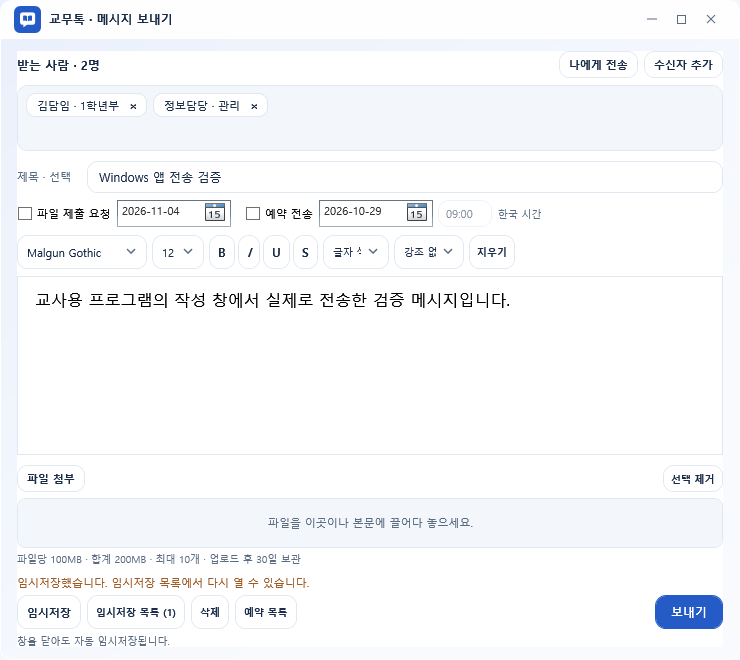

PC 프로그램
교무톡
서버관리자용 · Windows · Mac
최신 릴리즈 확인 중
우리 학교가 직접 운영하는 메신저
교직원은 교무톡, 학생과 학부모는 학교톡.
내 역할과 기기에 맞는 프로그램을 선택하세요.
PC 프로그램과 모바일 앱을 나누어 선택하세요.
PC 프로그램
서버관리자용 · Windows · Mac
최신 릴리즈 확인 중
교사용 앱
Android · iOS
출시 예정
학생·학부모용 앱
Android · iOS
출시 예정
PC 다운로드에서 서버관리자용·Windows용·Mac용을 고를 수 있습니다. 버전과 설치파일은 GitHub 최신 공개 릴리즈를 따릅니다. 업데이트 사용법 ↗
학교 업무의 흐름을 알고 만들었습니다.
LESS SEARCHING, MORE TEACHING
매일 쓰는 기능을 익숙한 동선에 모았습니다.
화면을 선택해 교무톡을 둘러보세요.

받는 사람을 확인하고, 메시지와 자료를 함께 보내세요.
BUILT AROUND YOUR SCHOOL
공통 서비스에 학교를 끼워 맞추기보다,
학교가 운영의 중심이 되도록 설계했습니다.
학교별 서버에 계정과 업무 데이터를 보관합니다. 중앙 학교 목록은 학교 검색과 연결 안내를 맡습니다.
승인된 학교를 검색해 접속합니다. 교무톡은 교직원 소통을, 학교톡은 학생·학부모의 학교 소식 확인을 맡습니다.
개인 시간표, 학사 일정, 특별실 예약, 상담 예약과 수강신청을 권한에 맞게 이용합니다.
PC 프로그램은 업데이트 확인을 지원하고, 학교는 백업·권한·운영 설정을 직접 관리합니다.
QUICK START
서버를 먼저 준비하고, 교직원이 연결합니다.
휴대폰 앱 안내는 출시 준비 단계입니다.
BEFORE YOU START
각 학교가 자체 서버를 설치하고 관리합니다. 학교 등록 신청과 개발자 승인이 완료되면 학교 검색 목록에 연결 정보를 등록합니다. 이 배포 사이트에는 학교의 메시지나 학생 정보를 저장하지 않습니다.
먼저 학교 관리자가 서버, 구성원, 학교 등록과 운영 정책을 준비해야 합니다. 교직원은 학교를 선택해 로그인합니다. 학생 계정은 학교에서 일괄 등록하고, 학부모는 가입 후 자녀 고유번호를 연결하는 절차를 사용합니다. 휴대폰 앱은 아직 출시 준비 중입니다.
Windows·Mac 교무톡의 ‘할 일·제출’에서 ‘파일 제출·수합’을 열고 보낸 제출 요청을 선택하세요. 이름을 한 줄에 최대 4명씩 표시하며, 창이 좁아지면 열 수가 줄어듭니다. 이름 위에 마우스를 올리면 제출 상태를 확인할 수 있습니다. 긴 파일명은 …으로 줄여 표시하고, 마우스를 올리면 전체 이름이 보입니다.
파일명을 누르면 해당 파일을 받고, ‘파일 일괄 다운로드 (ZIP)’를 누르면 제출된 파일을 모아 받을 수 있습니다. 요청이 진행 중이면 이름 옆 ‘…’ 버튼에서 제출 면제·면제 해제를 선택할 수 있습니다.
Windows는 Windows 10(2004 이상) 또는 Windows 11의 64비트 PC에서 설치합니다. 학교 서버 PC에는 서버관리자용을, 교직원 PC에는 Windows 사용자용을 설치합니다.
Mac은 macOS 12 이상에서 사용합니다. Apple 메뉴 → ‘이 Mac에 관하여’에서 칩이 Apple M 시리즈이면 Apple Silicon용, 프로세서가 Intel이면 Intel용을 받으세요.
GitHub에 정식 공개된 설치파일이 아직 없다는 뜻입니다. 개발 중인 파일이나 테스트 빌드를 정식 다운로드로 표시하지 않습니다. 공개 릴리즈가 등록되면 이 페이지에서 최신 버전과 설치파일을 확인할 수 있습니다.
학교가 외부 접속용 HTTPS 연결과 접근 권한을 안전하게 구성한 경우 가능합니다. 학교 네트워크 운영 기준을 확인하고, 내부 업무용 서버와 외부 접속 영역을 구분해 운영해야 합니다. 외부 접속은 설치만으로 자동 개방되지 않습니다.
프로그램의 ‘오류 신고 · 개선 의견’ 메뉴를 이용하면 학교 서버를 통해 접수됩니다. 공개 소스에 대한 제안은 각 GitHub 저장소의 Issues에 남길 수 있습니다. 학생 정보나 학교 내부 자료는 Issues에 올리지 마세요.